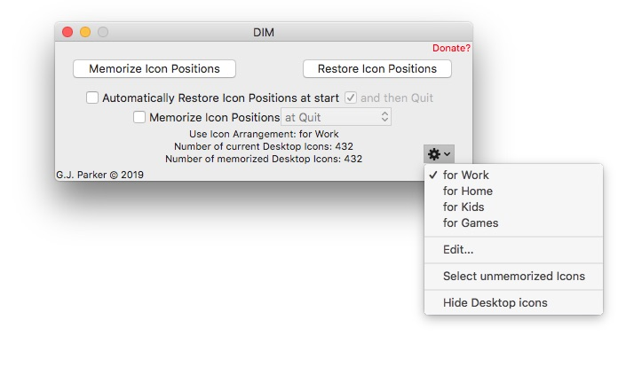
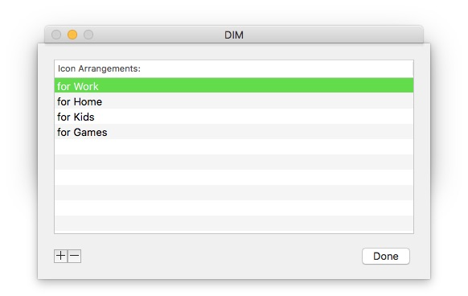
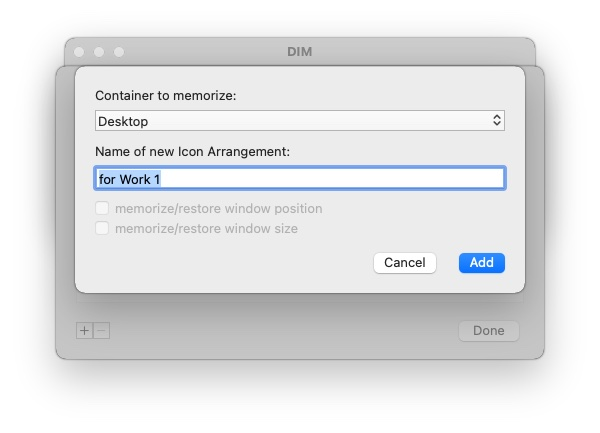
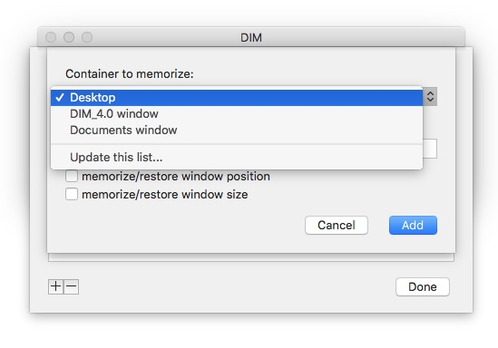

After the first time use
Depending on whether you checked “Automatically Restore Icon Positions at start” and/or checked “and then Quit”, DIM will behave differently when you run it.
1) To Always Get Back to main DIM window
If both “Automatically Restore Icon Positions at start” and “and then Quit” are checked, you will not be able to get back to the DIM screen to change icon arrangements. By holding the command (⌘) when starting, you will get the window to appear (starting this way will not restore the icon positions but will simply present the window). This allows you to reconfigure DIM. If you are having problems doing this, the best way is to find DIM, select it and then hold command (⌘) and press the letter “o” (for Open), let go of “o” but keep command (⌘) pressed until DIM starts.
2) If both Automatic Restore and Quit are selected
Then DIM will simply restore the icon positions using the selected Icon Arrangement (as specified in the “Use Icon Arrangement” line) without asking and quits automatically (wonderful if DIM is specified as a Login Item).
3) Restoring icon positions
By pressing the “Restore Icon Positions” button, all icon positions (if they still exist!) will be restored according to the selected Icon Arrangement (as specified in the “Use Icon Arrangement” line). If the screen resolution has changed since the last “Memorize Icon Positions” or the original running of DIM, the Desktop icon positions are relatively scaled in the new screen resolution. If there are new icons on the Desktop, they are left where they are. This procedure may take a few seconds, but it’s not like you can’t do something else as it finishes its task.
4) (Re)Memorizing icon Positions
By pressing the “Memorize Icon Positions” button, all the icon names and positions will be updated in the preferences file for the currently selected Icon Arrangement (as specified in the “Use Icon Arrangement” line). Previously stored information is lost for that Icon Arrangement (including any missing icons, see below).
5) Not forgetting Missing Icons
By holding the option key (⌥) the "Memorize Icon Positions" button turns into "include Any Missing Icons". Pressing this button, any missing icons will still be included in the Icon Arrangement. Otherwise it is identical to having pressed "Memorize Icon Positions". You may find this useful if you have desktop icons (network drives, for example) that may or may not exist when you want to update the Icon Arrangement.
6) Automatically Memorizing Icon Positions
By selecting "Memorize Icon Positions" check box, DIM can automatically memorize the current Icon Arrangement either "at Quit" or at selected time intervals. For this to work, DIM needs to stay running, of course. The current Icon Arrangement will be overwritten when this action is triggered.
7) Selecting an Icon Arrangement
By pressing the action ( ) drop down menu, you can select the Icon Arrangement to use for either Memorizing or Restoring Icon Positions (see above). Depending on how many Icon Arrangements, the action drop down menu can look something like  
Once you select an Icon Arrangement, the “Use Icon Arrangement:” and “Number of memorized Desktop Icons:” will be immediately updated.
8) Renaming, reordering, deleting and adding Icon Arrangements
By choosing the “Edit…” option in the action ( ) drop down menu, you will be presented with a dialog something like:
 
Here you can see all the saved Icon Arrangements (four above). You can then reorder the saved arrangements (drag and drop in the list), change the Icon Arrangement names (double click), add a new arrangement (press the “+” button) or delete the selected arrangement (press the “-“ button). Pressing the Done button will take you back to the main window.
Pressing the “+” button allows you to create a a new Icon Arrangement. After pressing “+” you will see something like:
 
The first pop-up menu ("Container to memorize") allows you to select either the Desktop or any Finder window that currently is in "icon view":
 
If you select a Finder window, then you can also memorize the position and/or size of that Finder window. The position will be scaled if the screen size/resolution changed. The size will be unscaled.
Regardless, you can then input a name for the Icon Arrangement. Pressing “Add” will cause the current icon positions to be saved under this new Icon Arrangement.
9) Which icons are not saved in an Arrangement
By choosing the “Select unmemorized Icons” option in the action ( ) drop down menu, any icons on the Desktop/Finder window that are not in the current Icon Arrangement will be selected on the Desktop/Finder window. If no such icons exists, you will be rewarded with a beep.
10) Hiding/unhiding Desktop icons
By choosing the “Hide Desktop Icons” option in the action ( ) drop down menu, any icons on the Desktop will be hidden. By selecting "Show Desktop Icons", they will be unhidden.
11) Checking for updates
By selecting "Check for update..." in the main DIM menu, you are granting permision for DIM to reach out (via https) to an update server. If there is no update available or an error occurs, then this menu item will be updated accordingling. Otherwise a sheet will appear on the main DIM window giving an option of downloading the update, visiting the website or canceling. If downloading is choosen, the update will be downloaded to the local Downloads folder and the menu item will change to "Locate new update". You should then quit DIM and replace it with the updated version. Otherwise, if there is an error, the menu item will be updated.
12) Starting from the command line (Terminal or script)
One can start DIM from the Terminal command line by typing open -a DIM (or open -b com.parker9.DIM-4). One can also pass command line arguments via open -a DIM --args [...] option. The list of valid command line arguments are:
where [arrangement] is an optional name of the Icon Arrangement to use. If not provided, the current Arrangement is assumed. Multiple options can be invoked and they will execute from left to right. Therefore, if "--quit" is present, it should be the last option on the command line. For example, open -a DIM --args --memorize "Start Up" --restore --select-missing-icons would memorize the current Desktop icon arrangment in "Start Up" arrangement (overwriting if it exists or creating it otherwise). Then DIM restores the icons according to the current arrangement. And finally DIM would select any icons that are not present in the current arrangement. DIM will stay open, since the --quit option was not used.
G.J. Parker - http://www.parker9.com (Entonos)